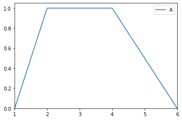

Trapezoid¶
- class floulib.Trapezoid(a, m, m_prime, b, **kwargs)¶
Bases:
LRClass to define trapezoidal membership function.
Note
Trapezoid is a subclass of
LR, therefore all methods inLRmay be used.LR is a subclass of
Multilinear, therefore all methods inMultilinearmay be used.Multilinear is a subclass of
Plot, therefore all methods inPlotmay also be used.- __init__(a, m, m_prime, b, **kwargs)¶
Constructor
- Parameters:
a (float) – Left coordinate of the support.
m (float) – Left coordinate of the kernel.
m_prime (float) – Right coordinate of the kernel.
b (float) – Right coordinate of the support.
**kwargs (TYPE) – Keyword arguments transmitted to the parent class.
- Return type:
None.
Examples
>>> from floulib import Trapezoid >>> A = Trapezoid(1,2,4,6, label = 'A') >>> A.plot()